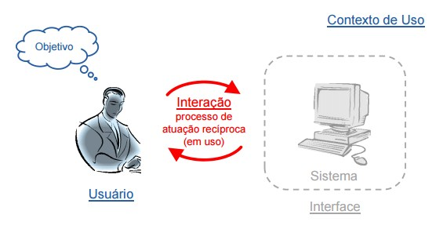
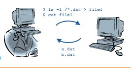
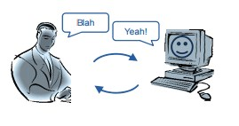
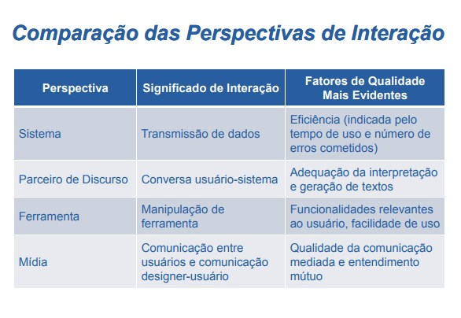
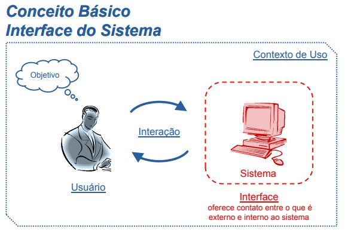

Interação

Perspectivas de Interação Humano-Computador

Perspectiva de Sistema
Usuário é considerado como um sistema computacional
Interação humano Interação humano-computador aproxima computador aproxima-se da interação entre sistemas
O objetivo é aumentar a eficiência e reduzir o número de erros humanos
Geralmente requer treinamento e capacidade cognitiva
Exempos
- Teclas de atalho
- Linha de comando
- Reserva de vôo (funcionário da companhia aérea)

Perspectiva de Parceiro de Discurso
Surgiu na área de Inteligência Artificial
Sistema assume um papel à altura de um ser humano
Sistema capaz de raciocinar, fazer inferências, tomar decisões e adquirir informação
Interação por meio de linguagem natural
Exemplos:
Sistema de busca e tradutores
Chatter Bots: http://www.inbot.com.br/sete/ e http://www.conpet.gov.br/ed/

Perspectiva de Ferramenta
Sistema interativo é considerado um instrumento
Interação representa aplicar uma ferramenta a algum material e avaliar o resultado
Encadeamento de ações e reações executadas de maneira quase automática
Depende da destreza
Exemplo:
- Software editor de texto
Perspectiva de Mídia
Sistema interativo visto como uma mídia
Interação significa comunicação num contexto coletivo
Comunicação bilateral ou unilateral
- Usuário ↔ Usuário, Designer → Usuário
Exemplos:
- E-mail, chats, fórum
- Redes sociais
- Documentação do sistema

Comparação das Perspectivas de Interação

Conceito Básico Interface do Sistema

Diferença entre Interação e Interface
Interação
- Processo que ocorre durante o uso de um sistema interativo.
Interface
- Toda a porção do sistema com a qual o usuário mantém contato.
Contato físico
Contato conceitual
Alguns usuários acreditam que a interface é o sistema
Contato Físico
Ocorre através do hardware e do software utilizados durante a interação
Dispositivos de entrada
- Participação ativa: permitem agir sobre a interface.
- Teclado, mouse, controle remoto, microfone e câmera.
Dispositivos de saída
- Participação passiva: permitem perceber reações.
- Monitor, impressora e alto-falante.
Contato Conceitual
Interpretação do usuário daquilo que ele percebe
Permite
- Compreender as respostas do sistema.
- Planejar os próximos caminhos de interação.
Exemplos:
- Compra on-line dividido em passos.
- Informação expressa por cores.

Conceito Básico Interface do Sistema
O termo affordance é emprestado da psicologia.
Características da interface (hardware e software) evidenciam o que é possível fazer com ela.
Falsas affordance podem dar a impressão errada.
- “Botões placebo” dão a falsa impressão de controle.
- Botão (defeituoso) para travessia de pedestre.
- Botão (defeituoso) para fechar porta de elevador.
- Texto azul sublinhado que não é um hiperlink.